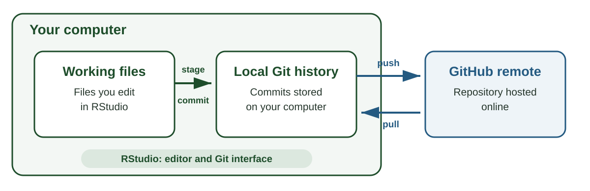
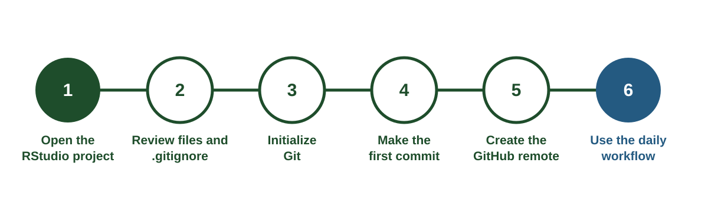

AREC 570 / ECON 530 / Unit 5
Gentzkow and Shapiro, Code and Data for the Social Sciences, Sections 1–4 (Gentzkow and Shapiro 2014)
Bryan, Excuse Me, Do You Have a Moment to Talk About Version Control?, 2017 (Bryan 2017)
Can another researcher reconstruct a result from the same inputs?
They need
Source: Gentzkow and Shapiro (2014)
The .Rproj file opens this folder as the project root
Raw inputs remain unchanged. Scripts rebuild derived data and outputs
Use paths relative to the project root
A path beginning with one person’s user directory usually fails on another computer
run_all.R records the order of operations
One command rebuilds the project from documented inputs
Consider one result in your current research project
Different records answer different questions
| Record | Question it answers |
|---|---|
Scripts and run_all.R |
What operations produced the result |
| README | How should a new researcher run the project |
| Codebook | What do the variables and values mean |
| Retrieval log | Where and when did the inputs originate |
| Lab diary | Why did the researcher make a decision |
| Version history | What changed across project states |
Version control gives a project a documented history. At selected points, it records the state of the project’s files together with the author, date, and reason for the change.
That history allows a researcher to compare versions, recover earlier work, and identify the exact project state used for an analysis or manuscript.
Source: Bryan (2017)
| Tool | Role |
|---|---|
| Git | Software that records the history of a project on your computer |
| GitHub | An online service that hosts a copy of a Git project and supports sharing |
| RStudio | An editor that lets you work with project files and run Git through buttons, menus, and the Terminal |
A Git project can remain entirely on one computer. GitHub adds an online copy. RStudio calls Git commands on your behalf (Bryan 2017)

| Term | Meaning |
|---|---|
| Repository | A project and its Git history |
| Working directory | The files currently visible in the project folder |
| Tracked file | A file whose changes Git follows |
| Staging area | The changes selected for the next commit |
| Commit | A recorded checkpoint in the project history |
| Diff | The lines added, removed, or changed |
| Term | Meaning |
|---|---|
| Commit message | A short explanation attached to a commit |
| Tag | A readable name attached to an important commit |
| Local | The repository on your computer |
| Remote | A connected repository hosted online |
| Origin | The default name for the remote connected to the local repository |
| Push | Send local commits to a remote |
| Pull | Bring remote commits into the local repository |
Save writes the current file to the working directory
Commit records selected changes in the local Git history
Push sends local commits to GitHub
Complete these steps once on each computer
The demo repository provides detailed instructions in docs/setup-rstudio.md
Download Git from git-scm.com/downloads
Restart RStudio after installation, then run
A successful check prints a version such as git version 2.51.0
Create an account at github.com
Install two helper packages and configure Git
Use an email connected to your GitHub account
Create a personal access token
Copy the token from GitHub, then store it
Treat the token like a password. Keep it out of scripts, .Renviron, and commits
Run
Check for
You have an existing RStudio project with scripts, data documentation, and early results
Your goal is to

Open the .Rproj file inside the project root
Confirm that
Track files that explain, run, or report the research
Generated outputs can follow the project team’s publication and archival policy
.gitignore for excluded filesCommon exclusions include
.RData and .Rhistory.gitignore applies to files Git has not started tracking
Open .gitignore and review every file in the project
Revoke any credential that enters a commit because earlier commits retain its contents
Run in the RStudio Console
RStudio may restart the project. A Git tab should then appear beside Environment and History
This command creates the hidden .git directory that stores local history
| State | Meaning |
|---|---|
| Working directory | Files currently being edited |
| Staging area | Changes selected for the next commit |
| Commit | A recorded checkpoint with an explanatory message |
Staging lets one work session become several coherent commits
| Status | Meaning |
|---|---|
M |
A tracked file was modified |
? |
A new file is untracked |
A |
A new file is staged for its first commit |
D |
A tracked file was deleted |
R |
A tracked file was renamed or moved |
Diff shows changed lines. The Staged boxes select changes for the next commit
Create initial project structureThe commit now exists in local Git history
Run in the RStudio Console
This command
originRepeat the edit, inspect, stage, and commit steps as the work develops
In a practice project
README.mdREADME.mdClarify project research questionThe RStudio buttons run these commands
Companion reference: docs/git-in-rstudio.md
The diff records the changed text
The commit message records the reason for that change
| General message | Research-specific message |
|---|---|
updates |
Code suppressed ACS estimates as missing |
fixed bug |
Keep FIPS codes as text to preserve leading zeros |
final version |
Restrict sample to the April–September growing season |
A useful message identifies the completed change. Add an explanation when a change alters the sample or interpretation
Use History in RStudio or Commits on GitHub to inspect
Tags such as 5.2-retrieve give a readable name to a particular commit
A remote repository already exists when
The starting action depends on ownership and purpose
The arec_570_demo project retrieved land-use, streamflow, weather, and Census data through APIs
docs/data-plan.md connected the sources to a research questionToday we organize that work and begin recording its history
arec_570_demo develops in stages across Unit 5
| Tag | Lecture | Addition |
|---|---|---|
5.2-retrieve |
API collection | Retrieval script |
5.3-structure |
Structure and Git | Folders, run_all.R, and .gitignore |
5.4-collaborate |
Collaboration | Issues, branches, and pull requests |
5.5-report |
Reporting | Codebook, sample, and data section |
Lecture 5.2 assigned Parts One and Two of docs/setup-rstudio.md
usethis::git_sitrep() without errorsnzchar(Sys.getenv("CENSUS_API_KEY")) returns TRUEBring the laptop used to complete these steps
| Term | Meaning |
|---|---|
| Clone | A local copy of a remote repository and its history |
| Fork | A linked GitHub copy under your account |
| Template | An independent repository created from a standard set of files |
| Upstream | A conventional name for the original repository behind a fork |
Branches, merges, and pull requests receive fuller treatment in Lecture 5.4
| Situation | Starting action |
|---|---|
| You have access to a team repository | Clone the team repository |
| You want a linked copy of public or course work | Fork, then clone your fork |
| You want an independent project with a standard structure | Use template, then clone the new repository |
| You already have your own local project | Initialize Git, then create a GitHub remote |
Cloning is the step that creates the working project on your computer
Use clone when the repository already exists and you have permission to work in it
In RStudio
Cloning copies files and history and configures the remote as origin
Use fork when you want a linked GitHub copy under your account
A fork supports
After creating the fork on GitHub, clone your fork to RStudio
Use template when a repository provides a reusable starting structure
The new repository receives
A personal website template is one example. Your website becomes an independent project with its own history
A. Your advisor adds you to a private team repository
B. You want your own version of the course demo and need later course updates
C. Your department offers a personal website template
D. You have an existing dissertation project on your computer
Open github.com/laurenchenarides/arec_570_demo while signed in
github.com/your-username/arec_570_demoYour fork remains linked to the course repository for later synchronization
GitProjectsThe local repository’s origin points to your fork
| Name | Repository in this exercise |
|---|---|
origin |
Your fork on GitHub |
upstream |
The original course repository |
GitHub’s Sync fork brings course updates into your fork
After syncing the fork, Pull brings those commits to the local project
Open the comparison between 5.2-retrieve and 5.3-structure
Look for
run_all.R.gitignoreWhich change most improves another researcher’s ability to reproduce the project?
Create docs/class-notes.md and add one sentence explaining a geographic or temporal choice in the demo project
docs/class-notes.mdDocument geographic assignment ruleThe new file belongs to your fork, so later course updates can remain separate
Pull brings remote commits into the local repository
Push sends local commits to the remote repository
When GitHub reports newer remote commits
Lecture 5.4 develops branches, conflicts, and pull requests
| Problem | First check |
|---|---|
| The Git tab is missing | Confirm the .Rproj inside a Git repository is open |
| Git rejects a commit | Check the configured name and email with usethis::git_sitrep() |
| GitHub rejects authentication | Check whether the personal access token is present and current |
| A push is rejected | Pull and inspect the incoming commits |
| A file never appears in the Git pane | Check the patterns in .gitignore |
Record the exact error message when asking for help
For one current project, identify
.gitignore should excludeShare one unresolved choice with the class
How do the reading’s recommendations appear in the demo repository?
run_all.RWhich recommendation requires the largest change in your current workflow?
Confirm that your fork contains one new commit from today’s exercise
Be prepared to show
Project structure records where inputs, code, and outputs belong
Git records local changes as commits
GitHub hosts a remote repository for sharing and collaboration
RStudio provides an interface for editing files and using Git
Clone, fork, and template describe different ways to begin from an existing repository
Pull, edit, inspect, stage, commit, and push form the everyday workflow
AREC 570 / ECON 530 / Methodology of Economic Research